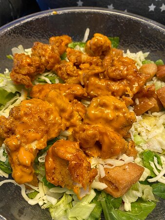

Homemade Sybergs Salad

Your favorite bar salad at home (sorta)
A version of the Sybergs chicken strip salad but made at home. Perfect for lunch.
Ingredients
- Sybergs Sauce
- Ranch Dressing
- Romain Lettuce
- Provel Cheese
- Black Olives
- Cherry Tomatoes
- Red Onion
- Banana Peppers
- Cooked Chicken
Steps
- Combine the lettuce, black olives, cherry tomatoes, red onion, bananna peppers, chicken, and cheese into a bowl.
- Drizel ranch dressing and then Sybergs dressing on top.
- Enjoy!